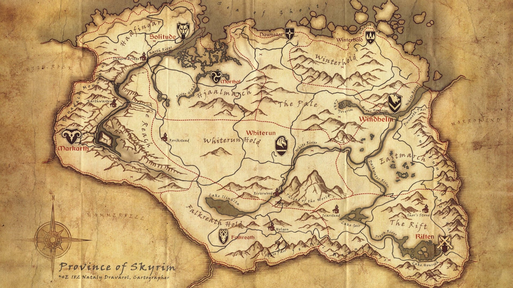
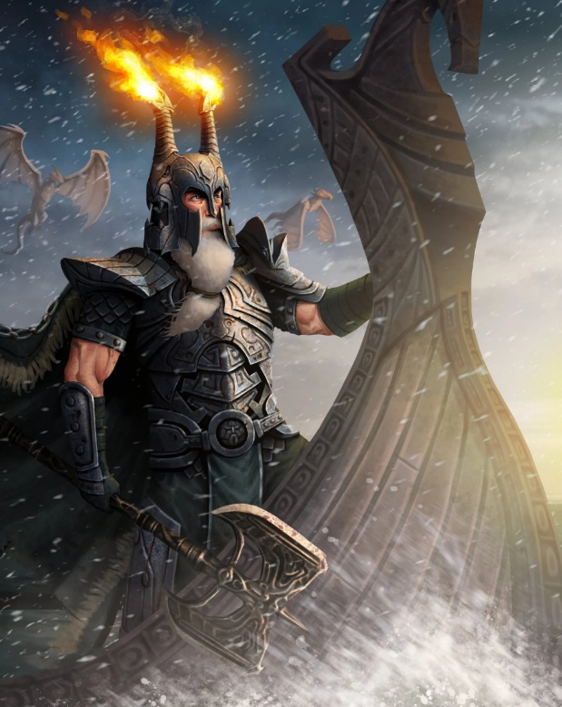

Skyrim es una provincia situada en el norte de la antigua Tamriel. Es el hogar de los nórdicos, una raza de humanos conocidos por su increíble resistencia a las frías heladas, tanto naturales como mágicas. Skyrim hace frontera con Morrowind por el este, Cyrodiil por el sur, Páramo del Martillo por el suroeste y con Roca Alta por el oeste; la isla de Solstheim yace al nordeste de Skyrim
Muchos nórdicos de Skyrim emigraron a Bruma durante la invasión imperial para poder ser ciudadanos de Cyrodiil, temiendo ser ejecutados o encarcelados.

Ysgramor y el Legado de los Nórdicos
La historia de los nórdicos de Skyrim está profundamente ligada a Ysgramor, una de las figuras más importantes de la antigüedad. Originario del continente de Atmora, Ysgramor llegó a las tierras de Skyrim junto con otros colonos humanos en una época en la que los elfos ya habitaban la región.
Los primeros asentamientos humanos se establecieron en Saarthal, una de las ciudades más antiguas de Skyrim. Sin embargo, la convivencia con los elfos terminó en conflicto durante un acontecimiento conocido como la Noche de las Lágrimas, cuando Saarthal fue atacada y destruida. Ysgramor logró escapar y regresó posteriormente a Atmora para reunir un ejército.
Ysgramor regresó a Skyrim acompañado por los Quinientos Compañeros, un grupo de guerreros que emprendió una campaña contra los elfos que habitaban la región. Las guerras posteriores permitieron a los humanos expandirse por Skyrim y establecer las bases de la civilización nórdica.

El Retorno de los Dragones y el Sangre del Dragon
Durante miles de años, los dragones fueron considerados criaturas de un pasado remoto. Sin embargo, al comienzo de la Cuarta Era, estas antiguas criaturas comenzaron a regresar a Skyrim, alterando el equilibrio de la provincia y sembrando el temor entre sus habitantes.
El regreso de los dragones está relacionado con Alduin, conocido como el Devorador de Mundos. Según las antiguas profecías nórdicas, Alduin regresaría para cumplir su destino y poner fin al mundo. Su aparición marca el comienzo de una nueva era de conflictos que amenaza no solo a Skyrim, sino a todo Tamriel.
Frente a esta amenaza surge el Sangre de Dragón, un mortal que posee el alma y los poderes de un dragón. Su capacidad para absorber las almas de los dragones y utilizar el Thu'um, o Grito, lo convierte en una figura fundamental para enfrentarse a Alduin y descubrir el verdadero origen de su regreso.
El retorno de los dragones también despierta antiguas historias de los nórdicos, quienes durante siglos lucharon contra estas criaturas. Los monumentos, tumbas y ruinas repartidos por Skyrim conservan el recuerdo de aquella época, revelando poco a poco la conexión entre los dragones, los antiguos nórdicos y el destino de la provincia.
La Guerra Civil de Skyrim
La Guerra Civil es uno de los conflictos más importantes que atraviesa Skyrim durante la Cuarta Era. La provincia se encuentra dividida entre aquellos que desean permanecer bajo el dominio del Imperio y los Capas de la Tormenta, un movimiento que lucha por la independencia de Skyrim.
El conflicto tiene sus raíces en acontecimientos ocurridos años antes. Tras la Gran Guerra entre el Imperio y el Dominio de Aldmer, se firmó el Concordato de Blanco y Oro, un tratado que prohibió el culto público a Talos. Esta decisión provocó un profundo descontento entre muchos nórdicos, para quienes Talos no solo era una figura religiosa, sino también un héroe de origen nórdico que había llegado a convertirse en emperador.
La tensión aumentó cuando Ulfric Capa de la Tormenta, Jarl de Ventalia, desafió al Alto Rey Torygg y acabó con su vida en un duelo. Posteriormente, Ulfric reunió seguidores que comenzaron a luchar por la independencia de Skyrim, enfrentándose a las fuerzas imperiales dirigidas por el General Tullius.
A medida que la guerra avanza, las diferentes ciudades y comarcas de Skyrim deben decidir a qué bando apoyar. La lucha no solo afecta a los soldados, sino también a los habitantes de la provincia, alterando el control de las ciudades, las rutas comerciales y el equilibrio político de Skyrim.